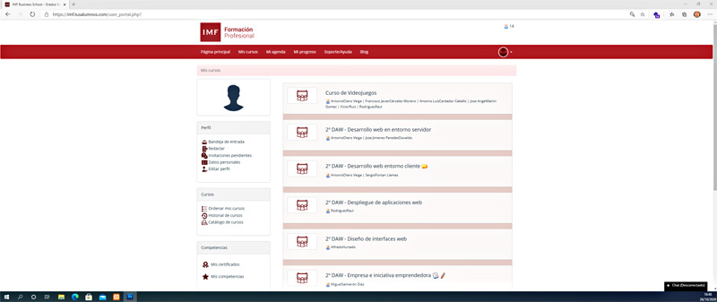

La etiqueta fundamental para insertar una imágen en una página web es <img>
Sin embargo sólo con la etiqueta no es suficiente, necesitamos insertar los atributos básicos que me van a permitir "conectar" con la imágen en sí y mostrar cierta información relativa a la imágen en el caso de que la imágen no se cargue o por cuestiones de accesibilidad.
Por lo tanto una etiqueta básica completa para insertar la captura que te muestro a continuación quedaría asi.
<img src="captura.jpg" alt="captura de pantalla de mi web favorita:www.miweb.es">
Otros atributos muy utilizados pero no recomendados a día de hoy para la maquetación (mejor con css), pero que todavía se ven en código de manera frecuente son:
Sin embargo para alinear la imagen la etiqueta imágen debe estar en el código por delante de la primera letra de primera línea del párrafo u objeto al que se quiera alinear, es decir, la etiqueta que yo he empleado para la imágen de la bombilla es la siguiente.
<img hspace="20px" src="img/bombilla-05-diw.jpg" alt="Una bombilla encendida y otra apagada" title="Bombillas" align="left">